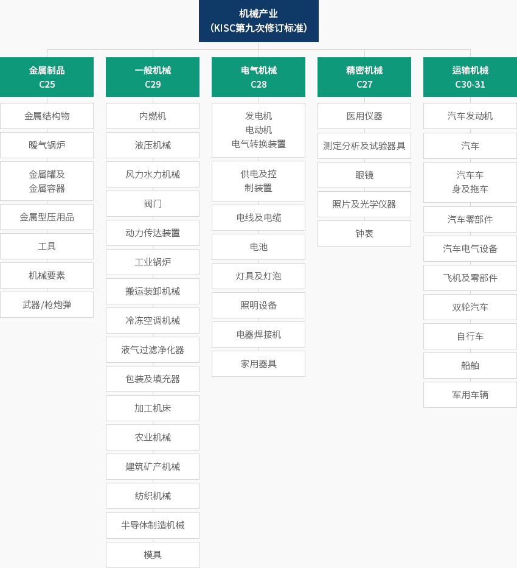
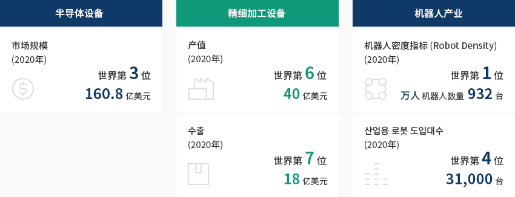
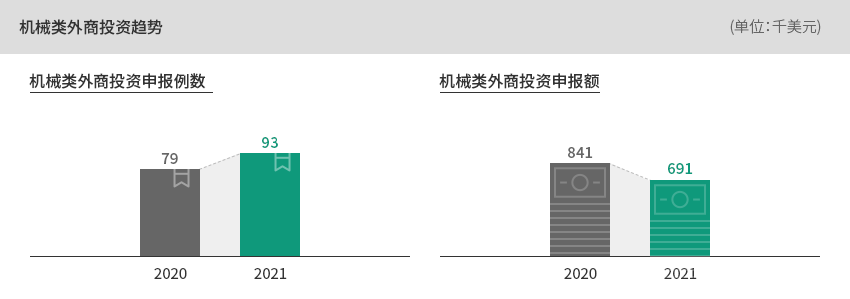
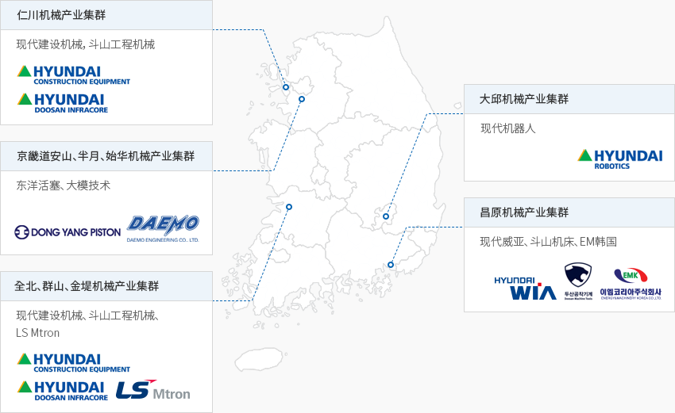

机械
- Home
- Why KOREA
- 产业
- 机械
-
机械产业的 定义 关闭内容机械产业的 定义依据韩国标准产业分类（KISC），机械产业包括一般机械、电气机械、精密机械、
수运输机械、金属制品（组装金属）等五大行业。"依据韩国标准产业分类的5大机械产业分类"机械产业(KISC第九次修订标准)-
金属制品 C25
- 金属结构物
- 暖气锅炉
- 金属罐及金属容器
- 锅炉
- 金属型压用品
- 工具
- 机械要素
- 武器/枪炮弹
-
一般机械 C29
- 内燃机
- 液压机械
- 风力水力机械
- 阀门
- 动力传达装置
- 工业锅炉
- 搬运装卸机械
- 冷冻空调机械
- 液气过滤净化器
- 包装及填充器
- 加工机床
- 农业机械
- 建筑矿产机械
- 纺织机械
- 半导体制造机械
- 模具
-
电气机械 C28
- 发电机, 电动机, 电气转换装置
- 供电及控制装置
- 电线及电缆
- 电池
- 灯具及灯泡
- 照明设备
- 电器焊接机
- 家用器具
-
电气机械 C27
- 医用仪器
- 测定分析及试验器具
- 眼镜
- 照片及光学仪器
- 钟表
-
运输机械 C30-31
- 汽车发动机
- 汽车
- 汽车车身及拖车
- 汽车零部件
- 汽车电气设备
- 飞机及零部件
- 双轮汽车
- 自行车
- 船舶
- 军用车辆
 ※ 资料来源：韩国统计厅
※ 资料来源：韩国统计厅 -
金属制品 C25
-
基于上下游产业生态系统 加强全球竞争力 打开内容基于上下游产业生态系统 加强全球竞争力韩国在机械产业领域一直具有价格竞争力，而且拥有发达的汽车、航空、造船、
半导体、显示器等上下游产业生态系统。020年，韩国的半导体设备市场规模为160.8亿美元，高居世界第三位，精密加工设备产值为40亿美元，
位居世界第六位，出口额突破18亿美元，位居世界第七位，其水平较高。今后，
得益于韩国支柱产业——智能工厂的普及和推广，制造系统的供应能力有望进一步提升。
※ 精密加工设备：指机床制造业（Machine Tool Industry），
包括在多种制造方法中用于切削加工和塑性加工的所有机械设备。另一方面，2020年韩国的机器人密度指标（万人机器人数量）居世界第二位，
工业机器人应用规模为世界第四位。"韩国机械产业的地位"- 半导体设备: 市场规模 (2020年) 世界第3位 160.8亿美元
- 精细加工设备: 产值 (2020年) 世界第6位 40亿美元, 出口(2020年) 世界第7位 18亿美元
- 机器人产业: 机器人密度指标 (Robot Density) (2020年) 世界第1位 万人机器人数量932台, 工业机器人运用规模(2020年) 世界第4位 31,000台
※ 资料来源：国际半导体设备材料协会（2021年4月）、Gardner、韩国机床产业协会、国际机器人联盟(IFR) -
作为韩国核心产业 有望依托出口实现增长 打开内容作为韩国核心产业 有望依托出口实现增长机械产业是韩国制造业中的核心产业，其产值排名第六，企业数量位居第一，从业人数排名第三，附加值排名第四。最近5年（2015年~2020年）的年均出口增长率为1.4%，贸易收支年均增长率为–0.8%。
特别是同期半导体设备年均出口增长率高达13.1%。"韩国制造业中的机械产业"(基准 : 2019年)韩国制造业中的机械产业 KISC中分类, 产值, 企业数, 从业人数, 附加值 KISC中分类 产值 企业数 从业人数 附加值 代码 项目名 万亿韩元 比重 排名 家 比重 排名 千人 比重 排名 万亿韩元 比重 排名 C 制造业 (10~33) 1,552 100.0 - 69,639 100.0 - 2,928 100.0 - 557 100.0 - 29 其他机械及设备制造业 123 3.8 6 9,835 14.1 1 335 11.4 3 45 8.0 4 ※ 资料来源：统计厅《矿业制造业调查报告》，以从业人数10人以上的企业为准。※ 资料来源：韩国统计厅《矿业制造业动向调查》及《矿业制造业调查》、关税厅《贸易统计》 -
对韩投资趋势 以一般机械、机床机械为主 打开内容以一般机械、机床机械为主的 对韩投资趋势机械类外商投资集中于一般机械和机床机械，与2019年相比，明显呈增长趋势。最具代表性的案例是韩国沃尔沃集团。1998年沃尔沃通过收购三星重工的建筑机械部门，
成功进入韩国。此后韩国沃尔沃集团的建筑机械部门成为沃尔沃集团生产挖掘机的全球基地，
将总产量的80%以上出口到欧洲、北美、亚洲等全世界各地。2019年，全球半导体设备企业美国泛林（Lam Research）决定将研发（R&D）中心完全迁至韩国，
有望与韩国本土材料、零部件、设备企业携手合作，积极推动联合开发。荷兰ASML是世界上唯一一家10纳米以下晶片生产工艺所需的极紫外线（EUV）光刻机供应商，
2021年公布了在京畿道华城建设工程训练中心和再制造中心的投资计划，
而这一高新设备领域在K-半导体带建设计划中发挥着核心轴的作用。 ※ 资料来源：外商投资统计
※ 资料来源：外商投资统计 -
韩国政府推动相关政策 提高机器人产业技术实力 打开内容韩国政府推动相关政策 以提高机器人产业技术实力2021年2月，韩国政府“划定材料、零部件、设备特色园区”，庆南地区被指定为精密机械领域特色园区，
有望强化机械产业全球供应链。2021年4月，韩国政府发布《2021年智能机器人实施计划》，有望通过推广与人类分工合作的机器人来应对社会需求
（人口减少、提高生活质量等），利用机器人加快所有产业的非接触化和数字转型，
提前完善制度和扩充实证基础，进而营造机器人应用环境。
此外，根据2020年4月韩国政府发布的《关于加强材料、零部件、设备产业竞争力的特别措施法施行细则（2020年4月1日）》，
制造设备产业备受瞩目。与此同时，韩国政府强烈希望发展工业机器人，有望为机械产业注入活力。韩国政府于2019年8月制定《智能型机器人三期基本计划（2019~2023）》，为已研发机器人的测试、
认证、实证、企业支持，构建七大据点，并通过修订《产学融合促进法》，建立监管沙盒制度。※ 七大据点：机器人认证中心（大邱）、安全机器人及水中机器人复合中心（庆北）、制造机器人技术中心（庆南）、
海洋机器人中心（釜山）、健康机器人中心（光州）、机器人产业化支持中心（大田）、融合零部件中心（富川）"2021年主要技术开发新课题"2021年主要技术开发新课题 领域, 主要内容 领域 主要内容 看护 开发用于隔离移送感染患者的追踪型半自动床位机器人 开发感染隔离病房内监护辅助及患者监控机器人系统 开发用于隔离治疗设施的看护机器人医疗 医疗 开发用于居家康复的轻型可穿戴康复机器人 物流 开发用于车辆装载货物的机器人装车系统 为提高韩国型物流仓库运营效率，开发移动物流处理机器人技术 综合 为实现机器人应用服务BM，开发现场应用型机器人系统 ※ 资料来源：相关部门联合《2021年智能型机器人实施计划》(2021年04月) -
机械集群 以首都地区及庆南地区为中心 打开内容以首都地区及庆南地区为中心的 机械集群截至2019年，63.8%的韩国机械产业企业位于首都地区和庆南地区。
尤其，庆南机械产业在韩国机械产业中的占比为14.3,%，位居韩国第二。庆南以昌原国家产业园区为中心，形成了包括“材料-零部件-成品”的优秀机械产业生态系统。
销售额排名世界前十的机床龙头企业——斗山机床和现代威亚也位于该产业园区。
世亚昌原特殊钢、韩国钢铁、韩国NSK等材料与零部件企业入驻其中，
正在面向昌原周围的需求企业——机械、汽车、航空、造船企业供应材料和零部件。"韩国机械产业主要集群分布情况"- 仁川机械产业集群: 现代建设机械，斗山工程机械
- 京畿道安山、半月、始华机械产业集群: 东洋活塞、大模技术
- 全北、群山、金堤机械产业集群: 现代建设机械、斗山工程机械、LS Mtron
- 大邱机械产业集群: 现代机器人
- 昌原机械产业集群: 现代威亚、斗山机床、EM韩国
※ 资料协助：产业研究院


Invest KOREA
机械/机器人/其他制造业项目经理
李哲淳
基干产业引进组
T.+82-2-3460-7724
选址信息推荐
产业园区信息
[Chungcheongbuk-do Jincheon County] Munbaek Precision Machinery Industrial
Complex
Click [Go to Detailed Information] to go to the relevant information screen of Smart K-Factory
service of Industrial Complex Corporation.
-
Complex nameMunbaek Precision Machinery Industrial Complex
-
Initial designation date2011.03.04
-
Designated area(m2)399,948
-
ManagementChungcheongbuk-do Jincheon County
-
Nearby RailwayOgeunjang Station
-
Distance from station(km)15
-
Nearby AirportCheongju International Airport
-
Distance from airport(km)16
-
Industrial water Supply capacity(ton/day)511(㎥/day)
-
Affiliation local governmentChungcheongbuk-do Jincheon County
-
Population81,949
产业园区信息
[Chungcheongnam-do Dangjin City] Asan(Bugok District)
Click [Go to Detailed Information] to go to the relevant information screen of Smart K-Factory
service of Industrial Complex Corporation.
-
Complex nameAsan(Bugok District)
-
Initial designation date1979.12.14
-
Designated area(m2)3,118,889
-
ManagementKorea Industrial Complex Corporation
-
Nearby RailwayPyeongtaek Station
-
Distance from station(km)44
-
Nearby AirportCheongju International Airport
-
Distance from airport(km)93
-
Industrial water Supply capacity(ton/day)-
-
Affiliation local governmentChungcheongnam-do Dangjin City
-
Population166,067
产业园区信息
[Jeollanam-do Yeosu City] Yulchon 1 General Industrial Complex (Gwangyang
Bay Area Free Economic Zone)
Click [Go to Detailed Information] to go to the relevant information screen of Smart K-Factory
service of Industrial Complex Corporation.
-
Complex nameYulchon 1 General Industrial Complex (Gwangyang Bay Area Free Economic Zone)
-
Initial designation date1992.05.13
-
Designated area(m2)9,106,791
-
ManagementGwangyang bay area Free Economic Zone Authority
-
Nearby RailwayYulchon Station
-
Distance from station(km)5
-
Nearby AirportYeosu Airport
-
Distance from airport(km)5
-
Industrial water Supply capacity(ton/day)30,937(㎥/day)
-
Affiliation local governmentJeollanam-do Yeosu City
-
Population280,603
产业园区信息
[Gyeonggi-do Ansan City] Banwol Plating General Industrial Complex
Click [Go to Detailed Information] to go to the relevant information screen of Smart K-Factory
service of Industrial Complex Corporation.
-
Complex nameBanwol Plating General Industrial Complex
-
Initial designation date1988.02.16
-
Designated area(m2)162,045
-
ManagementGyeonggi-do Ansan City
-
Nearby RailwaySuwon Station
-
Distance from station(km)13
-
Nearby AirportGimpo International Airport
-
Distance from airport(km)40
-
Industrial water Supply capacity(ton/day)-
-
Affiliation local governmentGyeonggi-do Ansan City
-
Population653,733
产业园区信息
[Gyeongsangnam-do Changwon City] Jinbuk Agricultural Industrial
Complex
Click [Go to Detailed Information] to go to the relevant information screen of Smart K-Factory
service of Industrial Complex Corporation.
-
Complex nameJinbuk Agricultural Industrial Complex
-
Initial designation date1989.12.15
-
Designated area(m2)133,170
-
ManagementGyeongsangnam-do Changwon City
-
Nearby RailwayMasan Station
-
Distance from station(km)22
-
Nearby AirportSacheon Airport
-
Distance from airport(km)51
-
Industrial water Supply capacity(ton/day)330(㎥/day)
-
Affiliation local governmentGyeongsangnam-do Changwon City
-
Population1,038,677
产业园区信息
[Ulsan Metropolitan City Buk-gu] Jungsan General Industrial Complex
Click [Go to Detailed Information] to go to the relevant information screen of Smart K-Factory
service of Industrial Complex Corporation.
-
Complex nameJungsan General Industrial Complex
-
Initial designation date2006.05.11
-
Designated area(m2)128,392
-
ManagementUlsan Metropolitan City
-
Nearby RailwayTaehwagang Station
-
Distance from station(km)17
-
Nearby AirportUlsan Airport
-
Distance from airport(km)10
-
Industrial water Supply capacity(ton/day)219(㎥/day)
-
Affiliation local governmentUlsan Metropolitan City Buk-gu
-
Population1,140,310